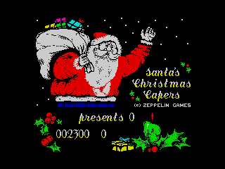
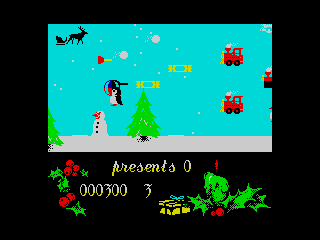
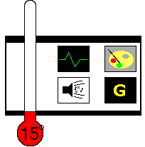

| Santa's Christmas Capers - Zeppelin - 1990 |
|  | Following the review theme of Christmas this month, Santa's back in Zeppelin Games' festive offering. Is it as priceless as the gold offered to baby Jesus by one of the kings (or wise men, if you prefer), or is it so far gone that the myrrh would be a better choice? Well, your answer will probably stick on the tip of your tongue as mine did when I tell you what type of game it is. Ready? Santa's Christmas Capers is a horizontally scrolling shoot'em-up. |
|
Silence. Er, hello? Are you still there, readers? Crumbs. They seem to have gone into cardiac arrest through shock. Better try some CPR. One-one hundred, two-two hundred, three-three hundred, four-four hundred, five-five hundred. I think that'll do for that; now for some mouth-to-mouth res... oh, they seem alright now. Well, have a drink and sit down whilst I carry on. Comfortable? Good. |
|
| Yep, Zeppelin give you control of Santa's sleigh and rapid-fire snowball cannon. You know, that rapid-fire snowball cannon that's in all the pictures and movies. Tsk. Didn't they teach you lot anything in primary school? It's just as well Santa and Rudolf have such defensive measures as their journey across the playing area is continually interrupted by waves of flying plungers, beach-balls, crackers and so on, which require wasting with the cannon strapped to the front of the sleigh before they waste poor old Santa and rob the world of its presents this Christmas. |

|
| The analysis? Well, it's a novel approach to the Christmas game genre and stands head and shoulders above all the side-scrolling Christmas shoot-em'ups. There's plenty of action on screen at any one time, which is pleasing, as are the explosions when things are destroyed and a high score table. One can't help but feel that it lacks the traditional Christmas spirit of forgiveness and love, but the number of enemies to kill help make up for that. | |
|  | But, put the fact that it's Santa in that sleigh to one side, and you have a really dodgy horizontally shoot-'em-up. The controls are sluggish, the enemies too dense and repetitive, and there don't seem to be any power-ups. All the things that made R-Type so great are noticeable by their non-existence: lighting-fast responses, variety of enemies, power-ups and large, beefy enemies of all shapes and sizes. And a small shadow-sprite of Santa, sleigh and Rudolf are only the icing on this deformed victoria sponge cake, as it were. |
|  |
Graphics: 37% Simple, but lots of them, they communicate well and they're pretty colourful. Sound: 19% Pretty dreadful carols on opening, and fairly ropy sound FX. Gameplay: 6% Clumsy controls, repetitive, and uninspired in the extreme. Life Expectancy: 11% About fifteen minutes. Summary: It's an uninspired and badly-executed cash-in. But it's still better than ESWAT or Double Dragon III. Jon Hyde |
Back to Contents